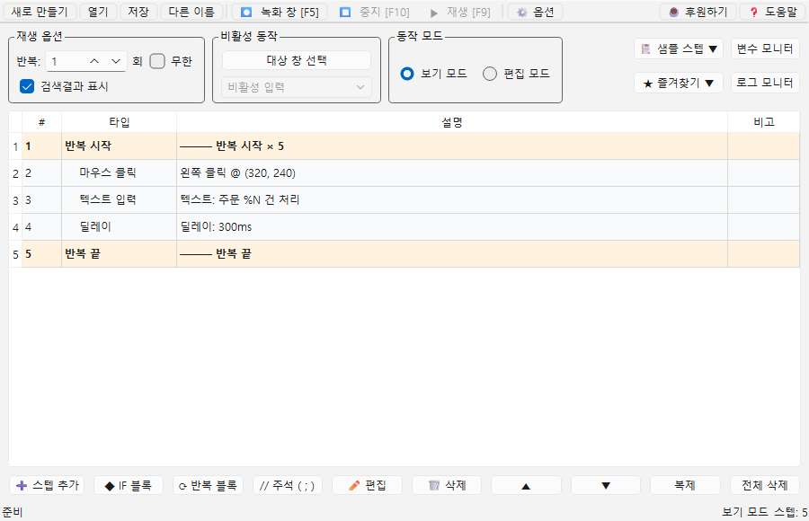
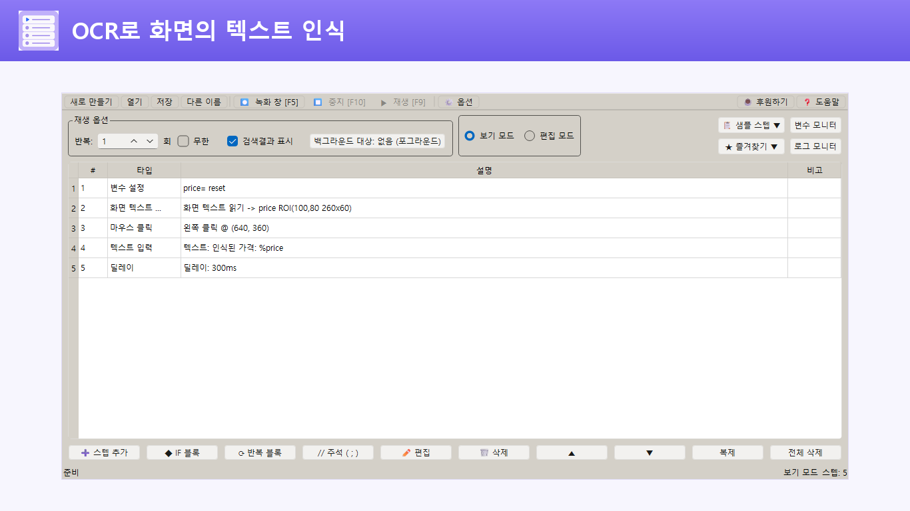
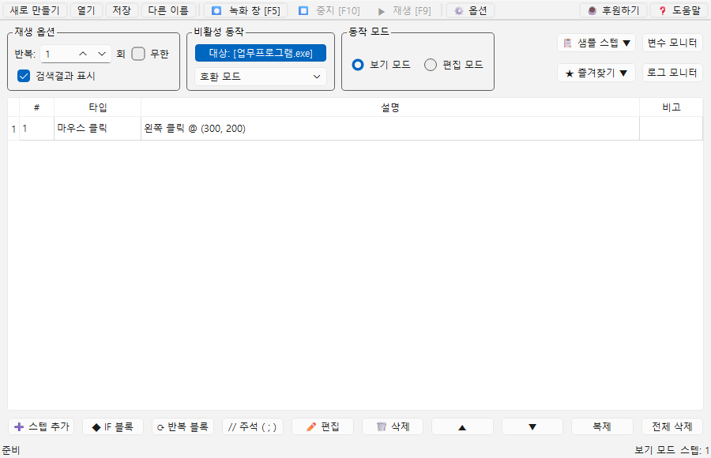

반복 입력
같은 양식에 다른 번호와 값을 차례대로 넣는 작업을 변수와 반복으로 처리합니다.
마우스와 키보드 동작을 녹화하거나 스텝으로 조립하세요. 조건, 반복, 변수, 이미지 검색과 OCR을 더해 코딩 없이 실제 업무 흐름을 자동화할 수 있습니다.

MADE FOR REAL WORK
정해진 화면을 클릭하고, 값을 입력하고, 결과를 확인하는 업무라면 자동화 흐름으로 바꿀 수 있습니다.
같은 양식에 다른 번호와 값을 차례대로 넣는 작업을 변수와 반복으로 처리합니다.
버튼이나 알림이 나타날 때까지 기다리고, 이미지와 텍스트를 인식해 다음 동작을 결정합니다.
여러 프로그램을 오가며 반복하는 클릭과 키 입력 순서를 재사용 가능한 매크로로 저장합니다.
CAPABILITIES
녹화한 동작 위에 판단과 데이터를 더해, 실제 업무에 맞는 자동화 흐름을 구성합니다.
실제 마우스·키보드 동작을 녹화해 스텝으로 바꾸고, 필요한 곳만 직접 추가하거나 순서를 조정할 수 있습니다.
IF·AND·OR·ELSE 분기, 중첩 반복, 변수 계산과 텍스트 치환으로 상황에 따라 달라지는 흐름을 만듭니다.
자주 쓰는 스텝과 공통 흐름을 저장해 여러 매크로에서 다시 사용합니다. 내장 샘플로 처음부터 빠르게 시작할 수도 있습니다.

화면에서 지정한 이미지를 찾거나, 선택 영역의 텍스트를 OCR로 읽어 변수에 저장합니다. 인식한 위치를 다음 클릭 좌표로 사용할 수도 있습니다.
OCR 사용법 보기지정한 창으로 마우스와 키보드 입력을 보내고, 비활성 입력이 어려운 프로그램에는 호환 모드를 사용할 수 있습니다.
프로그램 구조와 권한에 따라 백그라운드 입력 지원 범위는 달라질 수 있습니다.
백그라운드 입력 가이드
변수 모니터와 로그 모니터에서 현재 값, 클릭 좌표, 입력 내용, 조건 판정 결과를 실행 중에 확인합니다.
기준 좌표, 개수, 간격만 넣으면 반복마다 사용할 격자 좌표를 만들고 지그재그 순서까지 미리 확인할 수 있습니다.
작업별 프로젝트를 만들고 자동화 흐름을 저장할 파일을 준비합니다.
녹화로 실제 동작을 가져오거나 필요한 스텝을 하나씩 추가합니다.
조건, 반복, 변수, 이미지 검색과 OCR을 필요한 만큼 조합합니다.
실행 버튼이나 전역 단축키로 재생하고 모니터에서 결과를 확인합니다.
CLEAR & PRACTICAL
모든 기능을 무료로 사용할 수 있고 인앱 결제가 없습니다. Microsoft Store에서 설치하면 새 버전이 자동으로 업데이트됩니다.
한국어·영어 UI시스템 언어에 맞춰 자동 선택하거나 직접 바꿀 수 있습니다.
로컬 프로젝트자동화 스텝과 프로젝트 파일을 사용자의 PC에서 관리합니다.
실행 제어전역 단축키로 매크로를 시작하고 즉시 중지할 수 있습니다.